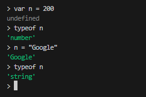

JavaScript
Variáveis e Tipos Primitivos
-
importante que para uma varíavel guarde um valor, caso já tenha algo
nela, o que tinha antes dará lugar a nova informação. Cada variável
terá o seu tipo.
- O sinal de "=" quer dizer que ele recebe o valor.
-
Caso queiramos que a varíavel esteja vazia utilizamos o
vaga a1 = null
-
Dados podem ser representados de várias formas diferentes, no caso
abaixo representamos Strings. Podemos utilizar 3 tipos de aspas
para denominar uma String:
- O nome dado as variáveis é IDENTIFICADORES
- REGRAS ->
- Podem começar com letra, $ ou _
- Não podem começar com números
- É possível usar letras ou números
- É possível usar acentos e símbolos
- Não podem conter espaços
- Não podem ser palavras reservadas
- DICAS ->
- Maiúsculas e minúsculas fazem diferença.
- Escolha de nomes coerentes para as variáveis
-
Para entrar no Node basta abrir o terminal no VSCode e digitar
node. Podemos dar comandos direto pelo terminal, criar e testar
variáveis.
-
Para limpar a tela no terminal Node, pode-se utilizar o comando
console.clear() ou CTRL + L
- Para sair do temrminal usamos o .exit
- Tipos primitivos primordiais
-
Para trabalhar com todos esses tipos utilizamos o comando
typeof (Tipo de)
-
Quando criamos variáveis nós não informamos o tipo primitivo, apenas o
valor, dependendo do que for sendo feito essa variável pode ir sendo
moldada
